A two-part exploration of flow matching. Part A uses a pretrained
model for sampling, guidance, editing, and optical illusions; Part B
builds denoising and flow-matching models from scratch.
I used a pretrained text-conditioned flow model at 512 × 512
resolution. Unless noted otherwise, sampling uses Euler step size
h = 0.02, seed 180, and classifier-free guidance weight
w = 7.
Part A / Section 1
Visualizing Training and Sampling
Part 1.1
Constructing Noisy Training Inputs
I linearly interpolate one clean sunset photograph with one fixed
Gaussian-noise tensor. At t = 0 the sample is pure noise;
as t approaches 1, more of the original image remains.
Forward process
Original, then t = 0.25, 0.50, and 0.75 using the same sampled noise.
Part 1.2
Classical Denoising
The classical baseline first divides by t to restore the
clean-image amplitude, then applies Gaussian blur. I swept
σ ∈ {1, 2, 4, 8, 16} and selected the lowest-MSE result for each input.
Stronger noise required stronger smoothing: the selected σ values
were 16, 8, and 4 for t = 0.25, 0.50, and 0.75 respectively.
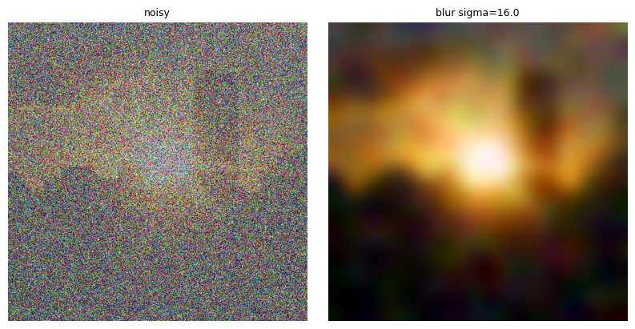
t = 0.25Best blur: σ = 16
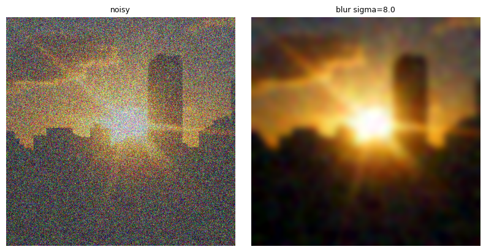
t = 0.50Best blur: σ = 8
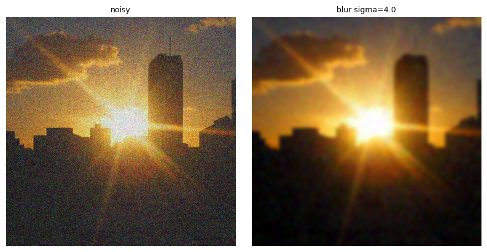
t = 0.75Best blur: σ = 4
Part 1.3
One-Step Denoising
With the prompt “a high quality photo,” the model predicts the
flow velocity at the current point. A single extrapolation by the
remaining time estimates the clean endpoint.
x̂1 = xt + (1 − t)vθ(xt, t, c)
This works best at t = 0.75 because the input is already
mostly clean and the remaining step, (1 − t), is short. At
t = 0.25, one velocity estimate must cover most of the path
from noise to image, so it recovers the scene but misses more detail.
One-step estimatePython
def one_step_denoise(
x, t, condition, predict_velocity
):
with torch.no_grad():
v = predict_velocity(x, t, condition)
return x + (1 - t) * v
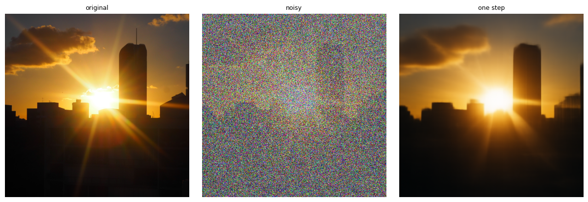
t = 0.25The global sunset composition returns, but fine structure is smoothed.
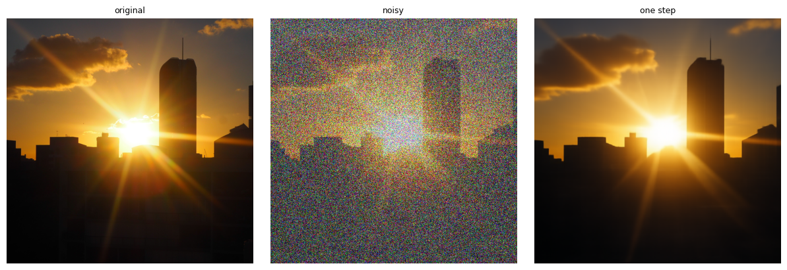
t = 0.50The skyline and light rays are reconstructed more clearly.
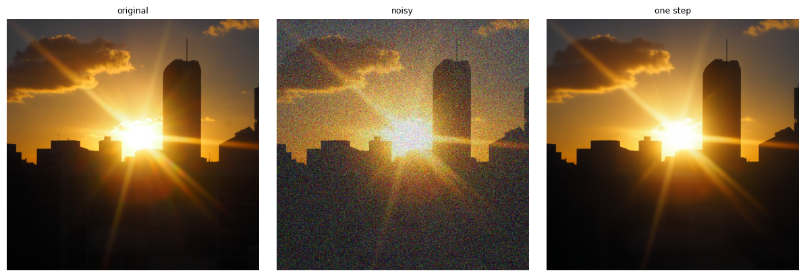
t = 0.75Only a short extrapolation remains, so the estimate closely follows the original scene.
Part 1.4
Visualizing Velocity
I compare the model’s predicted update against the exact update
implied by the saved clean image and noise tensor. The per-pixel
heatmap is the RGB root-mean-square error between those updates.
The strongest errors cluster around high-contrast structure such
as the skyline, tower edge, clouds, and sun rays.
The clean reference is the original shown in Part 1.1. All six
update images use one shared symmetric RGB scale, and all three
error maps use the same linear limits, so their magnitudes remain
directly comparable across time.
t = 0.25Noisy input, predicted update, ground-truth update, and RGB RMS error.
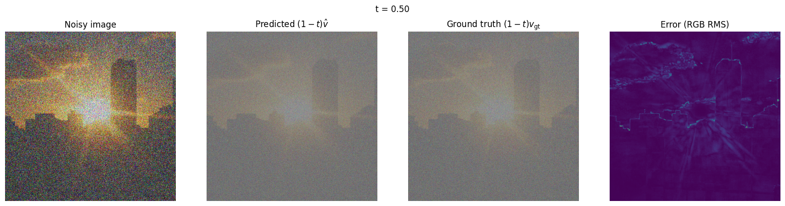
t = 0.50The update estimates align more closely as the input retains more structure.
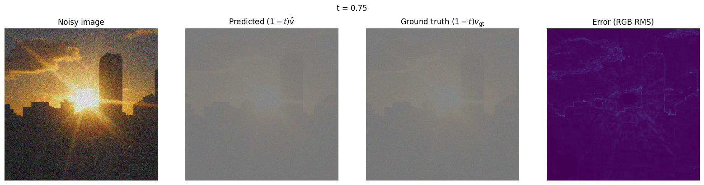
t = 0.75The remaining correction is smaller and concentrated near image edges.
Part 1.5
Iterative Denoising with Euler Sampling
One prediction assumes a constant direction. Euler sampling
instead recomputes velocity after every step, following the
curved learned trajectory from t = 0.50 to 1.00 in 25
updates of size 0.02.
xt+h = xt + h · vθ(xt, t, c)
Euler samplerPython
@torch.inference_mode()
def euler_sample(x_start, t_start, step_size, velocity):
x, t = x_start, t_start
states = [(t, x)]
while t < 1:
dt = min(step_size, 1 - t)
x = x + dt * velocity(x, t)
t += dt
states.append((t, x))
return x, states
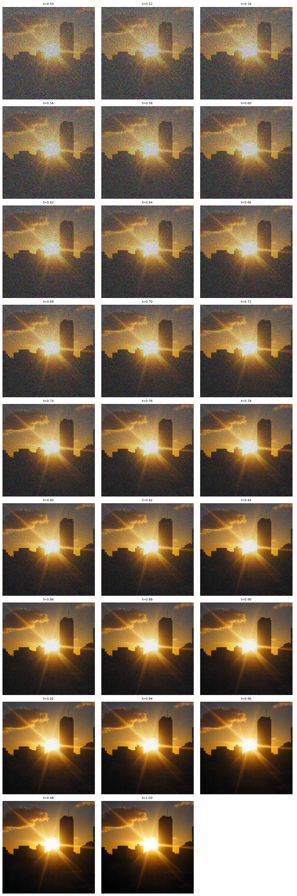
Euler trajectoryAll 25 updates are shown; the required every-fifth states occur at t = 0.50, 0.60, 0.70, 0.80, 0.90, and 1.00.
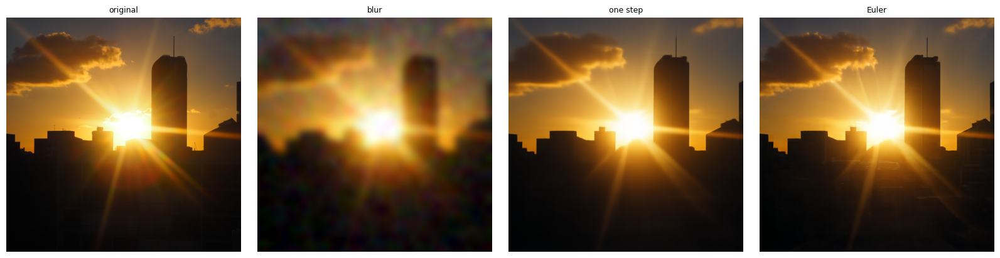
Method comparisonEuler recovers sharper structure than Gaussian blur and improves detail over the one-step estimate.
Part 1.6
Generating Images from Noise
Starting at t = 0 with five independent Gaussian tensors,
I run 50 Euler steps using “a high quality photo.” The generic
prompt strongly favors centered human portraits, though several
unguided samples contain malformed facial structure.
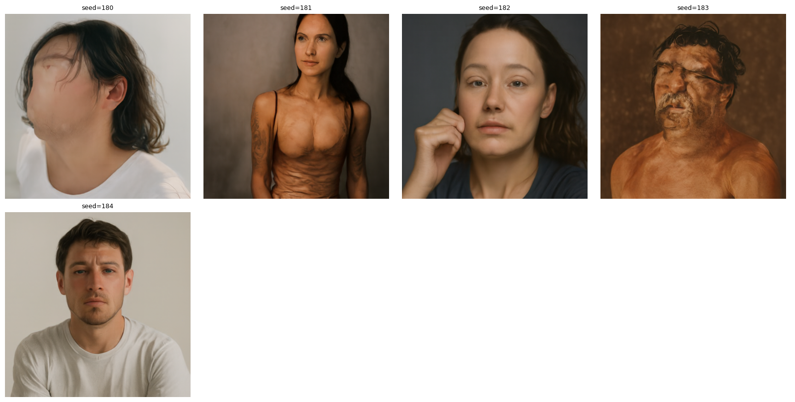
Conditional samplesSeeds 180–184 · prompt: “a high quality photo” · h = 0.02
Part A / Section 2
Conditional Generation and Guidance
Part 2.1
Classifier-Free Guidance
CFG evaluates the same state with the conditional prompt and an
empty prompt, then amplifies their difference. I use w = 7
on the same initial noises as Section 1.6.
vcfg = vc + w(vc − vu)
Compared with ordinary conditional sampling, the guided results
are more coherent and consistently portrait-like, at the cost of
less variation in composition.
Classifier-free guidanceSeeds 180–184 · w = 7 · h = 0.02
Part A / Section 3
Creative Applications
Part 3.1
Image-to-Image Editing
I interpolate each input toward noise at a chosen starting time,
then sample back to t = 1 with CFG. Smaller starting times
contain less of the original image, giving the model more freedom;
larger values preserve the input more closely.
At low starting times the model prior dominates, so the edit may
keep only coarse color or shape cues. As t increases, more
source structure survives and the output changes from a new plausible
photograph into a reconstruction of the input.
CampanileGeneric photo prompt across t = 0.02–0.50.
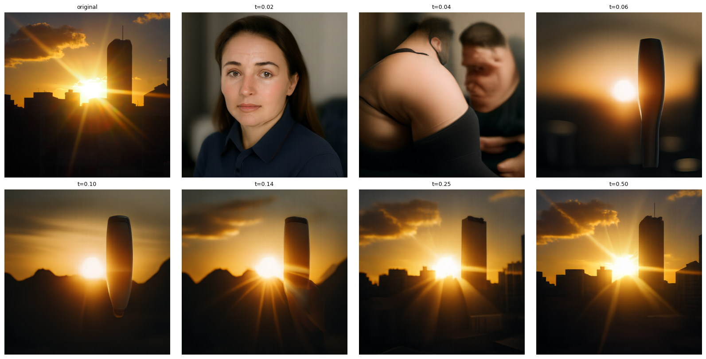
Sunset photographThe original composition reappears gradually as the starting time increases.
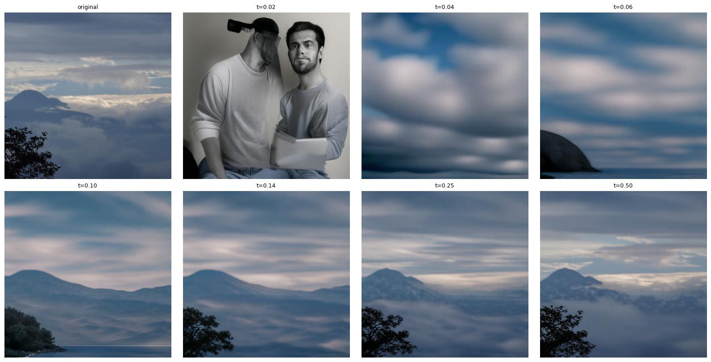
Mountain landscapeLow starting times hallucinate unrelated scenes; later times recover the mountain silhouette.
Low t
Most source information has been replaced by noise. The model creates a new scene, sometimes retaining only a vertical form, warm palette, or broad horizon.
Middle t
The subject begins to return: the tower top, sunset silhouette, and mountain ridge become recognizable while the model still changes local details.
High t
The input controls both composition and geometry. Sampling mainly restores texture and photographic appearance instead of inventing a different scene.
Web and hand-drawn inputs
The same sampler projects non-photographic inputs toward the model’s
natural-image manifold. A web illustration already contains dense
color and texture cues, so its edited sequence remains more coherent
than the sparse pencil drawings.
Web imageDownloaded illustration edited with the generic photo prompt.
Ablation / adding color
What color helped, and what it did not
With only thin pencil lines, the noisy input contains weak
low-frequency evidence, so the model often interprets it as a
generic pale object or blank surface. Color adds large, stable
regions that communicate palette and layout after noise is
introduced. This strongly helps the ocean scene, but the city
experiment shows that color cannot replace distinctive geometry
and fine structural detail.
Ocean drawing · lines onlyAt low t, the circle and waves are mistaken for cylinders, signs, and mostly blank surfaces. The intended scene returns only near t = 0.50.Ocean drawing · coloredOrange sky and blue waves preserve the scene’s broad organization. By t = 0.25 the model produces a coherent mountain-and-sunset interpretation.
City drawing · lines onlyThe sparse rectangles become a face, blocks, or empty walls because there is not enough appearance information to identify a skyline.City drawing · coloredColor helps most at t = 0.25, where the building arrangement returns more clearly. The other low-time generations remain poor, suggesting that broad color alone is insufficient: the model also needs stronger structural detail to identify the skyline.
Part 3.2
Text-Guided Image Editing
This uses the same editing procedure, but replaces the generic
condition with a target description. At low starting times the prompt
dominates; at high starting times the source image dominates. The
intermediate results combine prompt semantics with the input geometry.
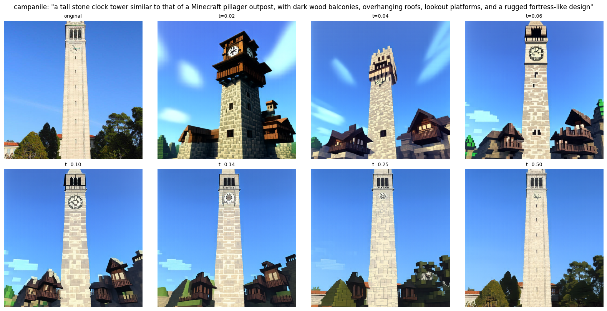
Campanile → Minecraft outpostPrompt: “a tall stone clock tower similar to that of a Minecraft pillager outpost, with dark wood balconies, overhanging roofs, lookout platforms, and a rugged fortress-like design.”
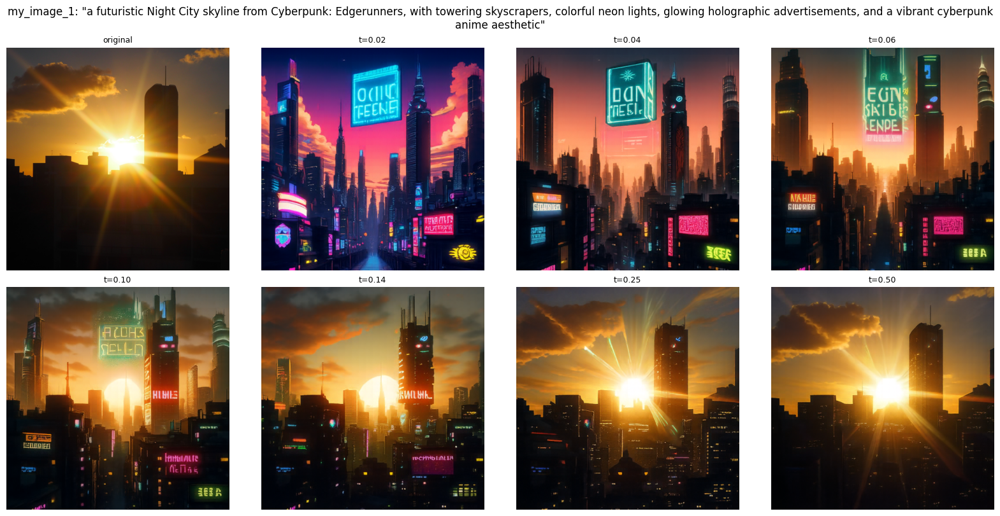
Sunset → Cyberpunk cityPrompt: “a futuristic Night City skyline from Cyberpunk: Edgerunners, with towering skyscrapers, colorful neon lights, glowing holographic advertisements, and a vibrant cyberpunk anime aesthetic.”
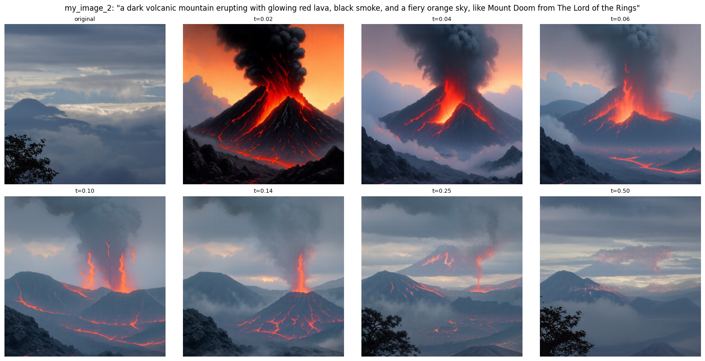
Mountain → VolcanoPrompt: “a dark volcanic mountain erupting with glowing red lava, black smoke, and a fiery orange sky, like Mount Doom from The Lord of the Rings.”
Part 3.3
Visual Anagrams
At every Euler step, I predict one CFG velocity upright under the
first prompt and a second velocity after rotating the state 180°.
I rotate the second prediction back and average the two directions.
Old man ↔ campfire“An oil painting of an old man” upright; “an oil painting of people around a campfire” after a 180° rotation.
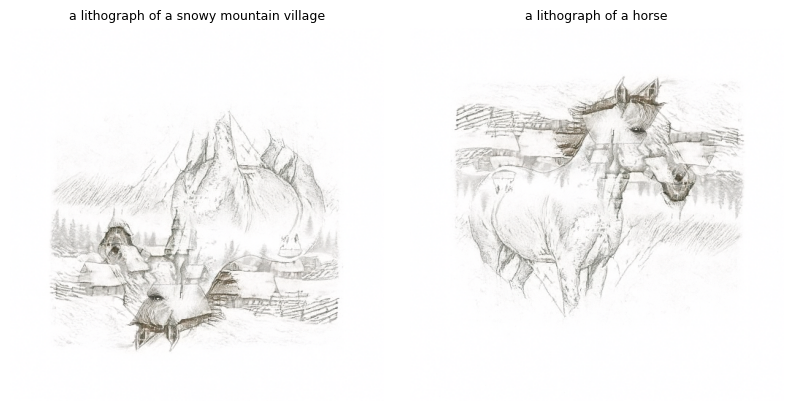
Snowy village ↔ horse“A lithograph of a snowy mountain village” upright; “a lithograph of a horse” after a 180° rotation.
Part 3.4
Hybrid Images
I predict CFG velocities for two prompts, keep the low frequencies
from the first, and add the high frequencies from the second. The
supplied low-pass filter uses a 265 × 265 Gaussian kernel with σ = 16.
Near: “a lithograph of a waterfall”Distant: “a lithograph of a skull”
Forest ↔ cat
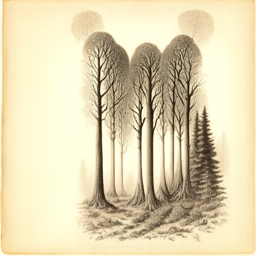
Near: “a lithograph of a forest”Distant: “a lithograph of a cat”
Part B
Flow Matching from Scratch
I first train a one-step MNIST denoiser, then replace direct image
prediction with a velocity field that can be integrated from noise
to data. MNIST pixels are normalized to [0, 1], and all models are
trained from scratch using the implementations shown below.
Part B / Section 1
Training a Single-Step Denoising UNet
Part 1.1
Implementing the UNet
The encoder compresses a 28 × 28 digit into increasingly
abstract features; the decoder restores spatial resolution.
Skip connections concatenate encoder activations into the
decoder so that fine strokes do not have to pass through the
1 × 1 bottleneck alone.
A stride-2 convolution performs each downsample, a transposed
convolution performs each upsample, and average pooling reduces
the final 7 × 7 feature map to the bottleneck.
def forward(self, x):
x1 = self.conv1(x)
x2 = self.down1(x1)
x3 = self.down2(x2)
x = self.unflatten(self.flatten(x3))
x = self.up1(torch.cat([x, x3], dim=1))
x = self.up2(torch.cat([x, x2], dim=1))
x = self.conv2(torch.cat([x, x1], dim=1))
return self.output(x)
Part 1.2
Using the UNet to Train a Denoiser
Training pairs are created with
z = x + σε, where
ε is fresh Gaussian noise. Increasing σ raises the noise scale
without reducing the clean-image amplitude.
From left to right, the visualization uses σ = 0.0, 0.2, 0.4,
0.5, 0.6, 0.8, and 1.0. The digit remains obvious near the
training level σ = 0.5, but individual pixels increasingly
overwhelm its stroke at the largest values.
Noising processPython
sigmas = [0.0, 0.2, 0.4, 0.5, 0.6, 0.8, 1.0]
epsilon = torch.randn_like(x)
noisy_images = []
for sigma in sigmas:
z = x + sigma * epsilon
noisy_images.append(z)
A D = 128 UNet is trained for five epochs with batch size 256,
Adam at 10−4, and a fresh noise tensor for every batch.
The raw loss falls quickly, then the smoothed curve settles near
0.02 as improvements become incremental.
Denoiser training + checkpointsPython
train_losses = []
checkpoints_denoiser = {}
for epoch in range(num_epochs):
model.train()
for images, _ in train_loader:
images = images.to(device)
noise = torch.randn_like(images)
noisy_images = images + noise_level * noise
outputs = model(noisy_images)
loss = criterion(outputs, images)
optimizer.zero_grad()
loss.backward()
optimizer.step()
train_losses.append(loss.item())
if epoch + 1 in [1, 5]:
checkpoints_denoiser[epoch + 1] = copy.deepcopy(
model.state_dict()
)
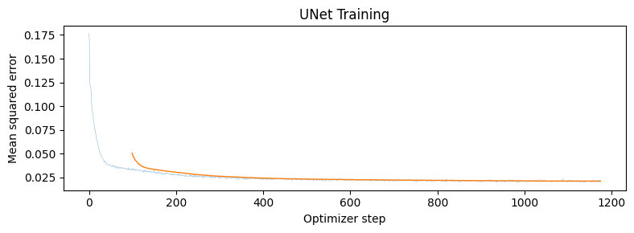
Training lossRaw per-step MSE in blue with the running average in orange.
The same sixteen test digits and the same σ = 0.5 noise realization
are used for both checkpoints. Most digit structure is already
recovered after one epoch; by epoch five, the strokes are slightly
cleaner and more stable, matching the early flattening of the loss.
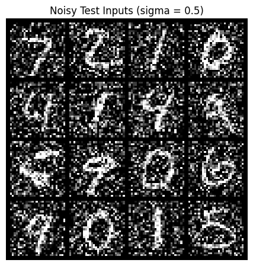
Shared test inputsThe same σ = 0.5 inputs are passed through both saved checkpoints.
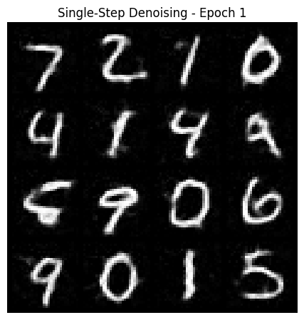
Epoch 1The model already reconstructs recognizable digits, with some softer and less certain strokes.Epoch 5Later training produces cleaner, more consistent reconstructions on the identical inputs.
1.2.2 · Out-of-distribution noise
The trained model is applied to the same test digit while σ rises
from 0.0 to 1.0. It remains stable around its training condition
σ = 0.5, while the largest noise levels soften and distort the
final stroke. At σ = 0, the network still smooths the clean input
because it learned a denoising transformation rather than an exact
identity map.
A fresh D = 128 UNet receives independent Gaussian noise while
the target remains a randomly paired MNIST digit. Because the
input contains no information about which target was selected,
MSE rewards the conditional mean of the training set. The result
is therefore a blurry digit-like centroid, not a diverse sample.
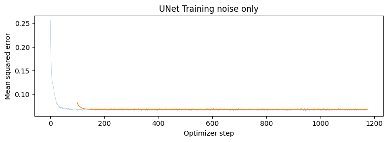
Pure-noise training lossThe loss plateaus well above the fixed-noise denoiser because the requested target is ambiguous.
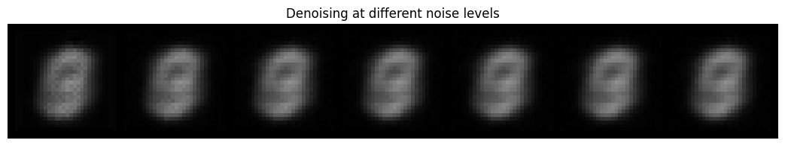
Collapsed outputThe similar, soft shapes resemble an average over many possible digits rather than any particular class.
Both checkpoints receive the same sixteen fixed noise tensors. The
outputs are already extremely similar after one epoch and remain
nearly identical after five: every input is mapped toward the same
soft, eight-like centroid. Extra training refines that average but
cannot recover diversity because the input contains no class signal.
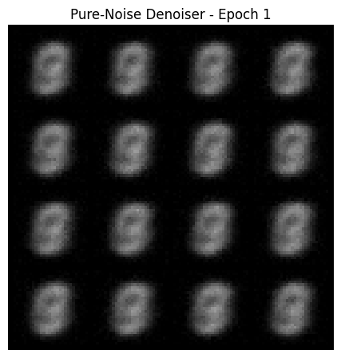
Epoch 1Sixteen independent noise inputs already collapse toward one blurry average digit.
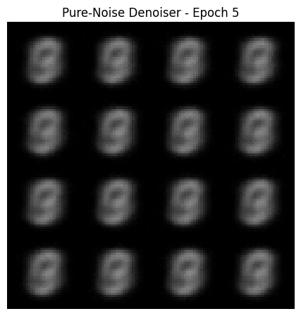
Epoch 5The centroid becomes slightly smoother, but the samples remain almost indistinguishable.
Part B / Section 2
Training a Flow Matching Model
Rather than predicting a clean digit in one ambiguous jump, flow
matching learns the velocity between sampled noise x0
and data x1. At a random time t, the model observes
xt = (1 − t)x0 + tx1 and predicts
the constant target velocity x1 − x0.
Part 2.1
Adding Time Conditioning
A scalar t tells the UNet where the current sample lies between
noise and data. Two fully connected blocks expand t into channel
vectors, which multiply the bottleneck and first decoder feature
map. The same image can therefore receive different velocity
predictions at different points along the trajectory.
Time embeddingsPython
class FCBlock(nn.Module):
def __init__(self, in_channels, out_channels):
super().__init__()
self.lin1 = nn.Linear(in_channels, out_channels)
self.gelu = nn.GELU()
self.lin2 = nn.Linear(out_channels, out_channels)
def forward(self, x):
return self.lin2(self.gelu(self.lin1(x)))
t = t.reshape(-1, 1)
t1 = self.fc1_t(t).unsqueeze(-1).unsqueeze(-1)
t2 = self.fc2_t(t).unsqueeze(-1).unsqueeze(-1)
x = x * t1
x = self.up1(torch.cat([x, x3], dim=1))
x = x * t2
@torch.inference_mode()
def time_fm_sample(unet, img_wh, num_ts, seed=0):
unet.eval()
x = torch.randn(
1, 1, img_wh[0], img_wh[1], device=device
)
dt = 1.0 / num_ts
for i in range(num_ts):
t = torch.tensor([i / num_ts], device=device)
velocity = unet(x, t)
x = x + dt * velocity
return x
The time-conditioned model uses D = 64, batch size 64, Adam
with initial learning rate 10−2, and ten epochs. An
exponential scheduler multiplies the learning rate by
0.11/10 after each epoch. The loss drops sharply as
the model first learns the global direction of the flow, then
declines slowly while digit strokes become more precise.
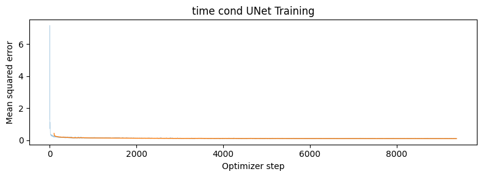
Time-conditioned trainingRaw per-step MSE and its smoothed trend across ten epochs.
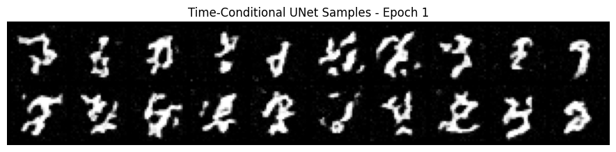
Epoch 1Digit-like strokes have emerged, but many forms remain fragmented or ambiguous.
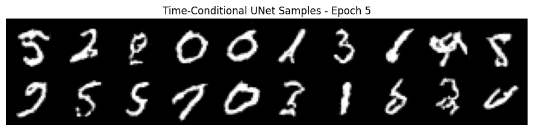
Epoch 5Most samples now have coherent digit structure, although several classes remain malformed.
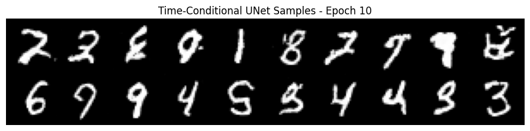
Epoch 10Strokes are cleaner and the batch contains a broader set of recognizable digits.
Parts 2.4–2.5
Class Conditioning and Training
The digit label is converted to a ten-dimensional one-hot
vector and embedded by two additional FCBlocks. Class features
scale the decoder activations while time features are added,
separating “what digit” from “where along the flow.”
During training, 10% of class vectors are zeroed. Those
unconditional examples make classifier-free guidance possible
at sampling time without training a separate model.
Class and time injectionPython
t = t.reshape(-1, 1)
t1 = self.fc1_t(t).unsqueeze(-1).unsqueeze(-1)
t2 = self.fc2_t(t).unsqueeze(-1).unsqueeze(-1)
c1 = self.fc1_c(c).unsqueeze(-1).unsqueeze(-1)
c2 = self.fc2_c(c).unsqueeze(-1).unsqueeze(-1)
x = c1 * x + t1
x = self.up1(torch.cat([x, x3], dim=1))
x = c2 * x + t2
learning_rate = 1e-2
gamma = 0.1 ** (1 / 10)
optimizer = torch.optim.Adam(
model.parameters(), lr=learning_rate
)
scheduler = torch.optim.lr_scheduler.ExponentialLR(
optimizer, gamma=gamma
)
for epoch in range(10):
for images, labels in train_loader:
loss = model(images.to(device), labels.to(device))
optimizer.zero_grad()
loss.backward()
optimizer.step()
scheduler.step()
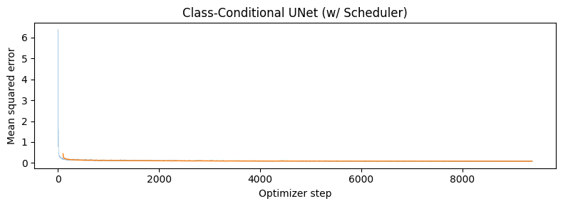
Class-conditioned training lossThe scheduled run rapidly reduces velocity-prediction error, then fine-tunes with progressively smaller learning rates.
Part 2.6
Class-Conditional Sampling with CFG
For each Euler step, the model predicts conditional and
unconditional velocities at the same x and t. Guidance scale
γ = 5 amplifies their difference. Four samples are generated
for every digit, arranged top-to-bottom from class 0 through 9.
Class conditioning provides a direct target, so recognizable
classes appear after one epoch. Epoch 5 is substantially cleaner;
epoch 10 mainly sharpens strokes and reduces within-class errors.
CFG sampling updatePython
for i in range(num_ts):
t = torch.full((n,), i / num_ts, device=device)
v_cond = unet(x, c_onehot, t)
v_uncond = unet(x, c_uncond, t)
velocity = v_uncond + 5.0 * (v_cond - v_uncond)
x = x + (1.0 / num_ts) * velocity
caches.append(x.clone())
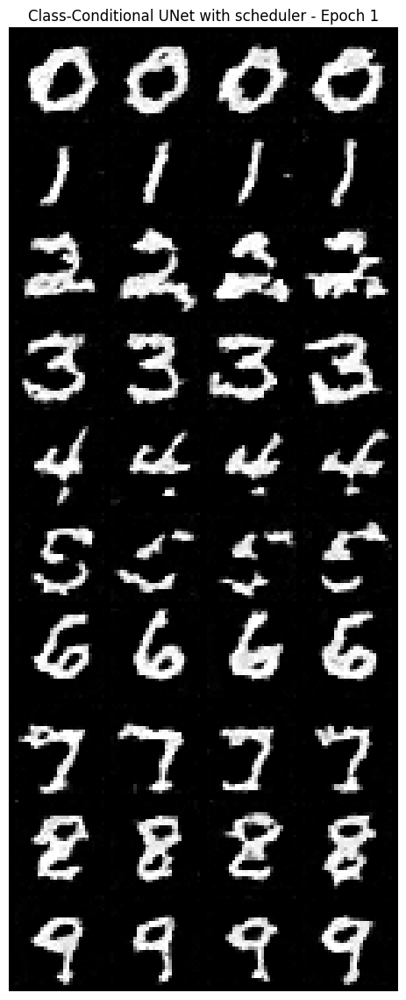
Epoch 1Classes are already separated, though several strokes contain gaps or artifacts.
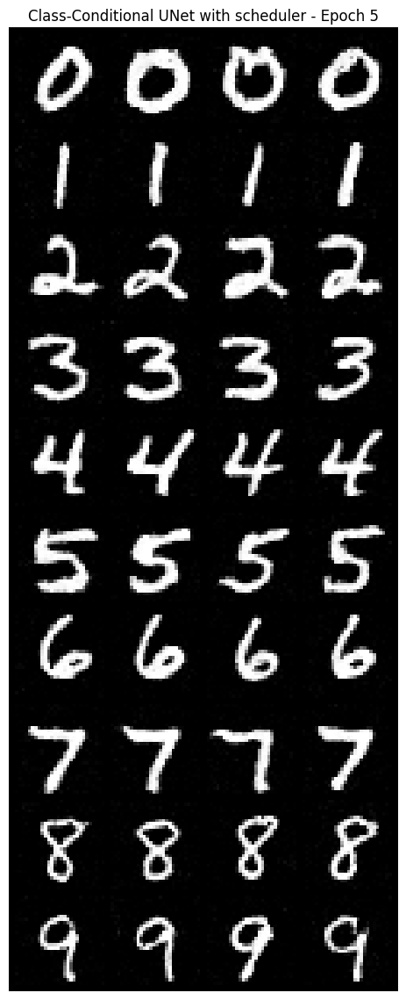
Epoch 5All ten rows are legible and within-class structure is consistent.
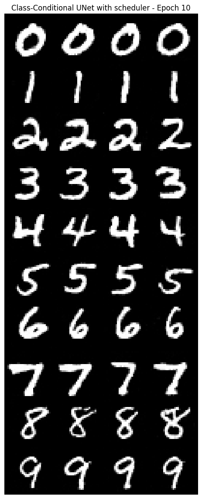
Epoch 10Later training refines edges, with only small changes from epoch 5.
Removing the learning-rate scheduler
To compensate for removing exponential decay, I reduced the
constant Adam learning rate from 10−2 to 4 × 10−3.
This avoids the unstable early updates of a large fixed rate while
retaining enough step size to learn for all ten epochs. The final
loss remains higher than the scheduled run, but the generated digits
are comparably legible by epochs 5 and 10.
Constant-rate trainingPython
learning_rate = 4e-3
optimizer = torch.optim.Adam(
model.parameters(), lr=learning_rate
)
train_losses_no_sched = []
checkpoints_no_sched = {}
for epoch in range(10):
model.train()
for images, labels in train_loader:
loss = model(
images.to(device), labels.to(device)
)
optimizer.zero_grad()
loss.backward()
optimizer.step()
train_losses_no_sched.append(loss.item())
if epoch + 1 in [1, 5, 10]:
checkpoints_no_sched[epoch + 1] = copy.deepcopy(
model.state_dict()
)
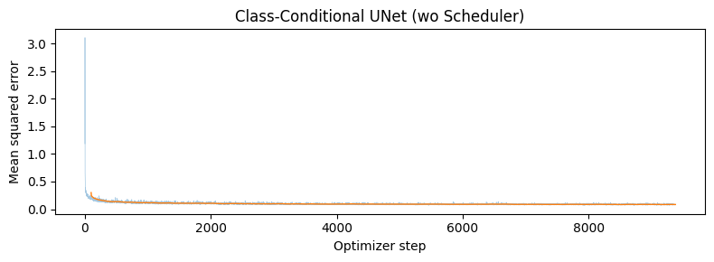
No-scheduler training lossThe smaller constant rate converges reliably, though to a visibly higher residual loss.
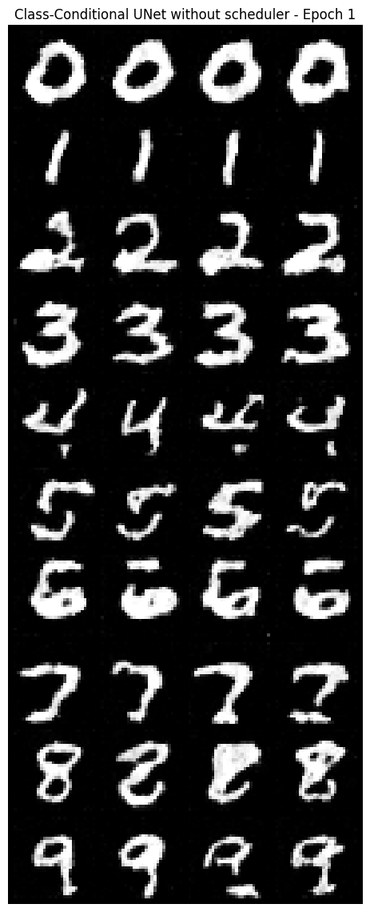
Epoch 1 · no schedulerMost classes are identifiable despite rough strokes.
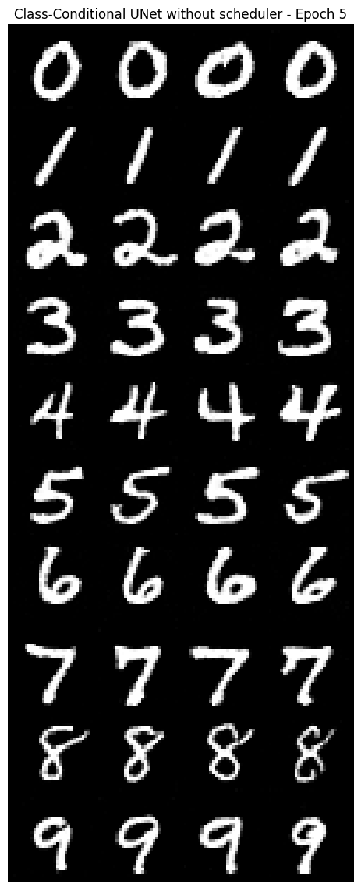
Epoch 5 · no schedulerConsistent class shapes emerge across all four instances.
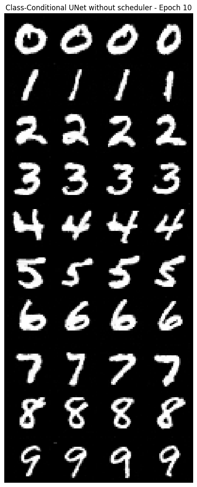
Epoch 10 · no schedulerThe constant-rate model maintains performance close to the scheduled run.